Lab 9: Orientation-Based Mapping with Dual ToF Sensors
ECE4160 Fast Robotics — Spring 2026
Connor Lynaugh

Objective
The objective of Lab 9 was to generate a sparse geometric map of the environment by rotating the robot through a sequence of known headings, collecting paired Time-of-Flight distance measurements, and transforming those measurements into the inertial room frame. Rather than continuously mapping while the robot was rotating, the system was designed to pause at a discrete set of angular targets, allow the orientation controller to settle, and then capture a synchronized pair of range samples.
System Design
The mapping system was built on top of the orientation PID controller from the previous lab and extended with two new BLE commands: MAP and SEND_MAP. The MAP command initialized the mapping routine, reset the orientation-control state, loaded the orientation PID gains, and enabled a map-specific flag so that the robot would step through a predefined sequence of target headings. The SEND_MAP command transmitted the stored scan results over BLE.
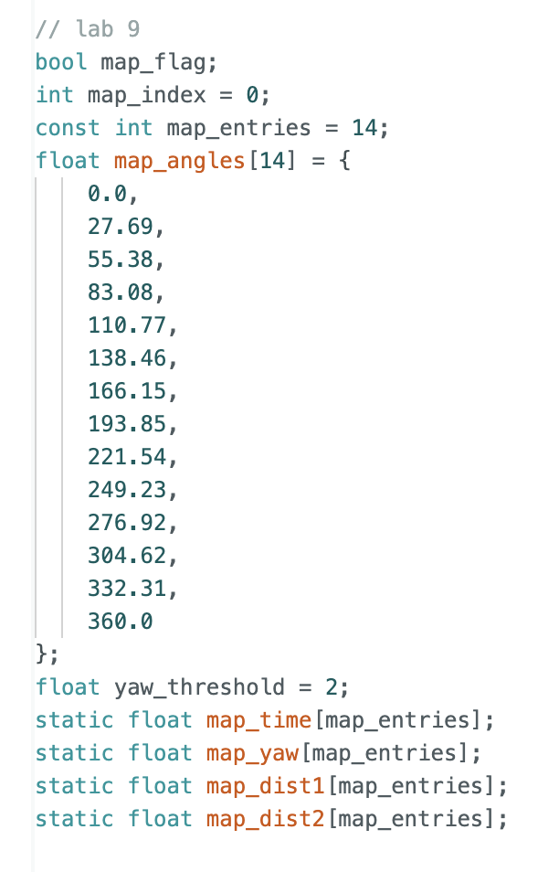
A fixed angle schedule was stored in map_angles, containing 14 headings spanning approximately 0° to 360°. The spacing is about 27.69°, which allows a full scan with moderate angular resolution while keeping the runtime manageable. Each heading corresponded to one map entry, with a stored timestamp, yaw estimate, and both ToF readings.
Additional Firmware Logic for Mapping
Mapping logic was placed inside the main control loop after the orientation PID update. When map_flag is enabled, the robot repeatedly checks whether the orientation error has fallen within a threshold band, yaw_threshold = 2, around the current target. To avoid recording data while the robot is still passing the target, the robot must remain settled within the threshold for 500 ms before taking a measurement. This was implemented with a settle_start timer. Once the heading had remained within threshold long enough, the firmware recorded the current yaw and both ToF distances, incremented map_index, and advanced to the next target heading.
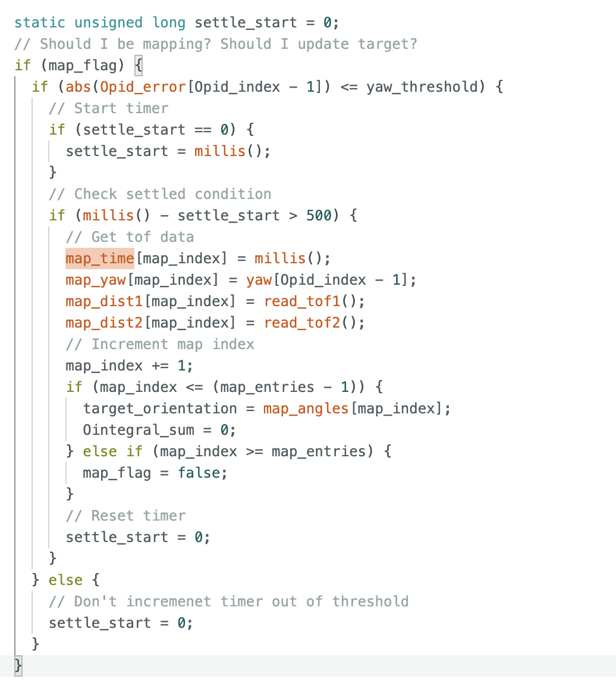
Measured yaw, rather than commanded yaw, was used in the saved data for the highest possible accuracy. Since the robot was only required to settle within a 2 degree band, using the DMP-reported yaw produced a more faithful representation of the actual heading for each recorded sample.
Orientation Control Support and Re-tuning
Reliable mapping depended on reliable heading control, so part of the Lab 9 work involved re-tuning the orientation PID loop for fast settling and low oscillation. The MAP command reused the existing orientation PID pipeline but reset all relevant state variables before beginning the sweep, including Opid_index, the filtered derivative memory, yaw extrapolation state, and the integral window. The following PID was utilized to produce the chosen map spin illustrated below.
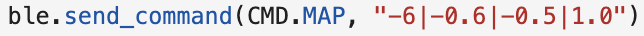
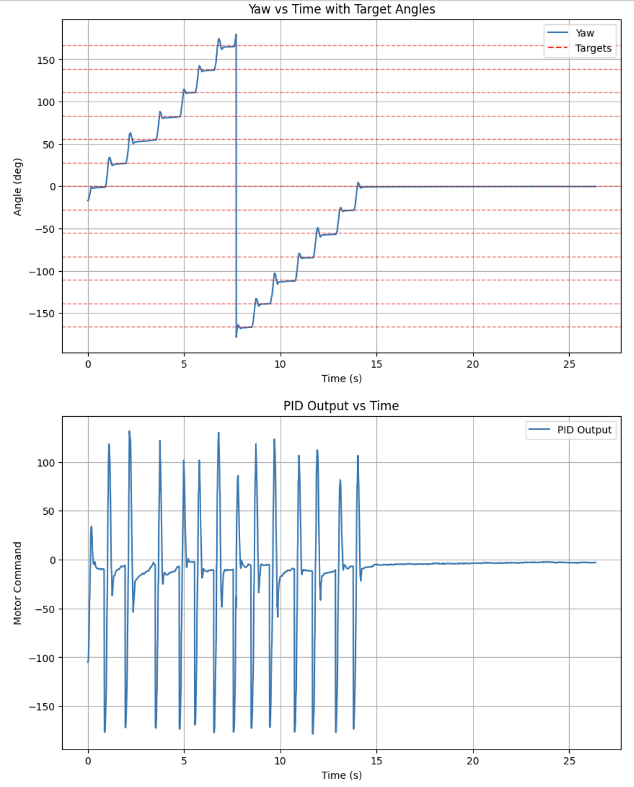
Repeated scans were generally consistent, especially for nearby obstacles, which suggests the robot was turning reasonably well about its axis. Most disagreement appeared at obstacle edges, where slight translational motion and yaw variation can shift the angle at which an object is first detected. Since yaw was typically within a few degrees of the target, the dominant error in a centered scan of a 4 m by 4 m room would come from angular uncertainty and long-range ToF variance rather than large translational drift. I would therefore expect average map error to be around 0.1 to 0.15 m, while the worst-case error could become larger at far distances or sharp corners. A 0.3 m bound is a conservative upper limit, but it is likely larger than the typical error observed in practice.
Transformation and Polar-to-Cartesian Mapping
Data was then collected at each of the four designated points on the lab map. Each map data collection was plotted in polar coordinates to authenticate its accuracy before later data fusion was used to build the map boundaries. Two ToF sensors were used to increase the amount of data on the map and introduce independent measurements.
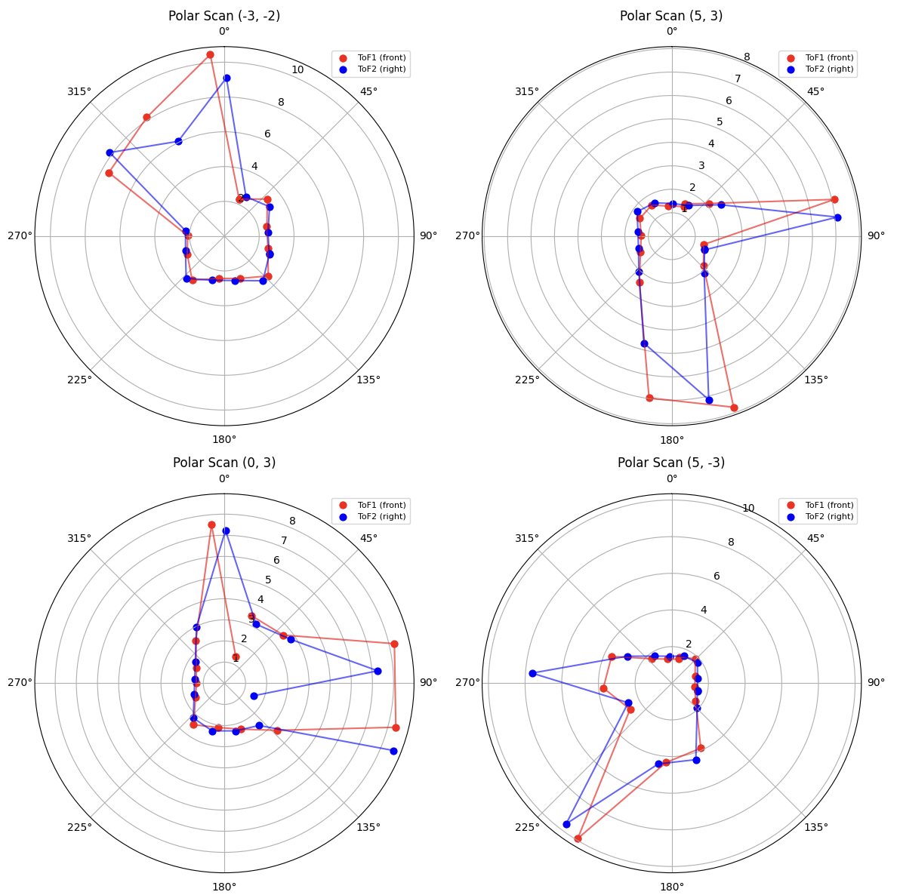
In order to map, the raw ToF readings were transformed in Python from sensor-frame polar observations into inertial-frame Cartesian coordinates. Each ToF measurement began as a point along the local x-axis of its respective sensor frame, represented in homogeneous coordinates.
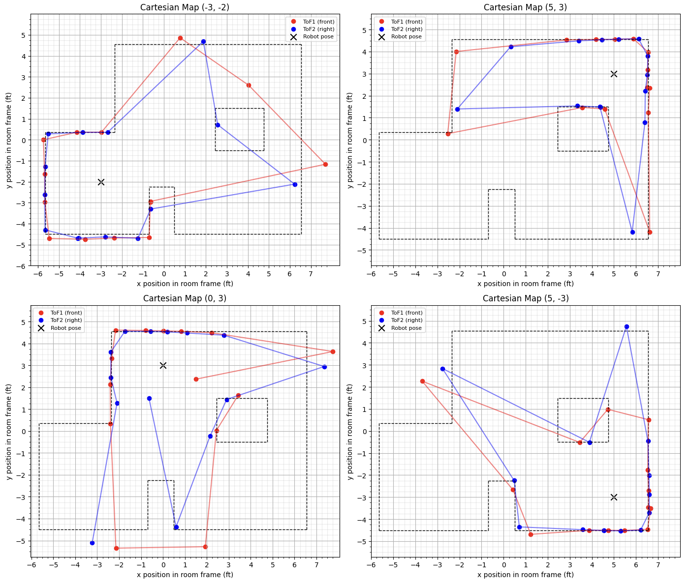
The transformation chain then mapped this point from the sensor frame to the robot frame and finally from the robot frame to the inertial room frame. This was implemented using homogeneous transformation matrices of the form shown below.
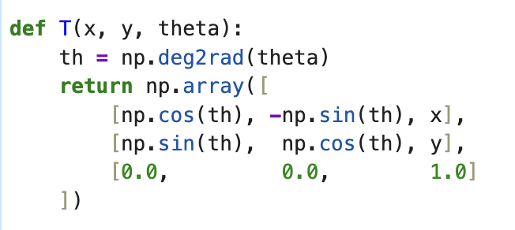
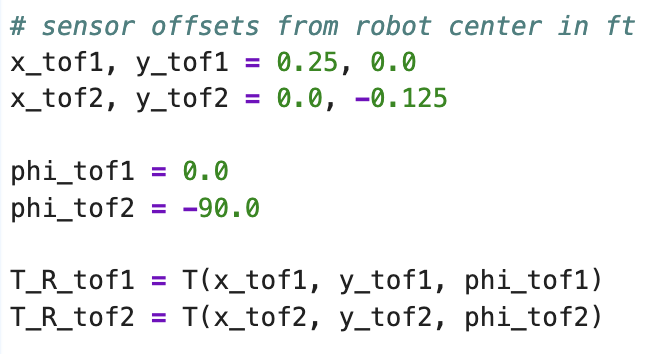
This framework made it straightforward to account for a forward-facing sensor and a right-facing sensor with different offsets. The four scan locations were first transformed separately in the inertial frame, then merged together to create a unified map representation.
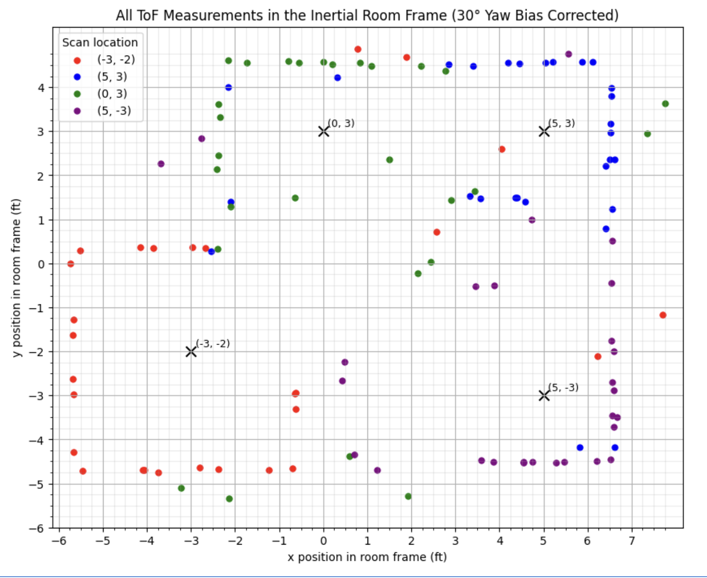
After fusing the four scans, manual wall segments were added to match the known environment and convert the sparse point cloud into an interpretable map outline.
This produced the following lists comprising the wall information.
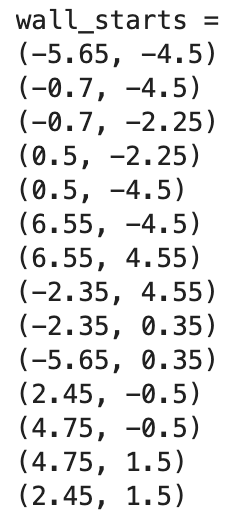
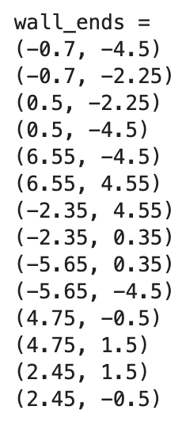
Results and Discussion
The mapping approach produced a genuinely accurate reconstruction of the provided map. The most important success was not perfect geometric precision, but rather the ability to recover major wall structure from a limited number of angular samples. The main sources of error were yaw bias, heading overshoot, sensor offset uncertainty, and occasional long-range ToF returns. These effects manifested as shifted or slightly curved wall clusters in the transformed plot. Even so, the discrete settle-and-sample strategy substantially improved map clarity compared with sampling during continuous turning.
Acknowledgements
I would like to acknowledge the course staff and TAs for providing the lab framework. I would also like to acknowledge that ChatGPT was used to convert this report into HTML format, in addition to support matplotlib function development for making plots more detailed.